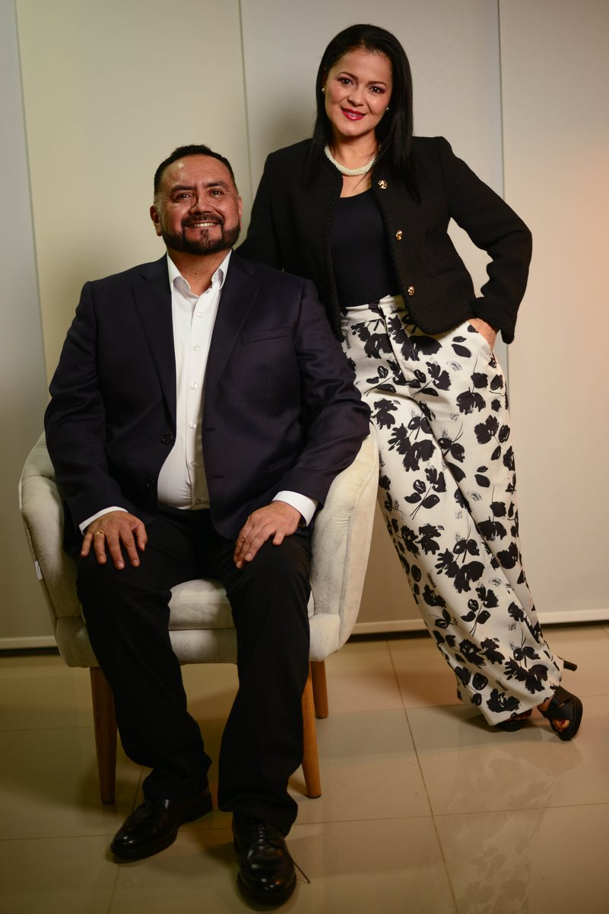
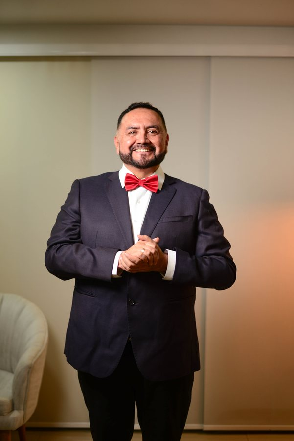
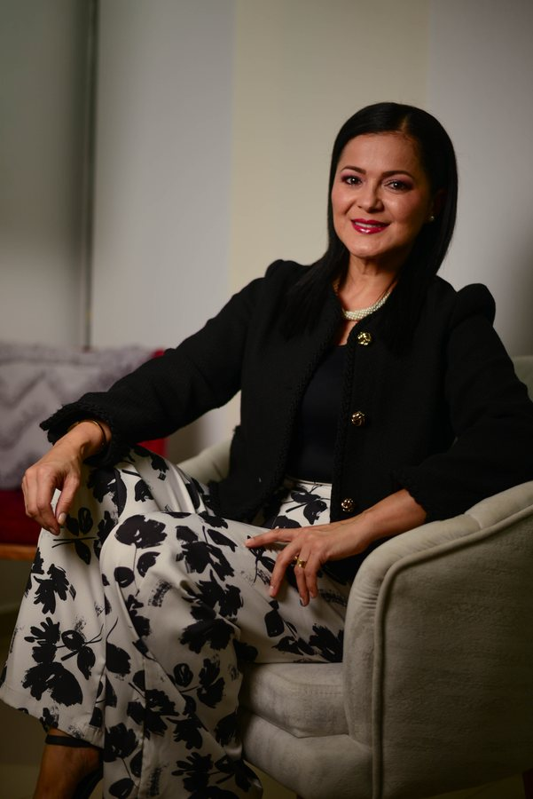

Comunidad Real para Todos
No importa tu historia, tus dudas o de dónde vengas: en Kayros Center encuentras una comunidad real para caminar en los principios de Dios, crecer en propósito y conectar con personas que quieren crecer espiritualmente.
Una comunidad cristiana contemporánea estructurada para que encuentres claridad espiritual, contención humana y un entorno transparente donde pertenecer antes de creer.
No importa tu historia, tus dudas o de dónde vengas: en Kayros Center encuentras una comunidad real para caminar en los principios de Dios, crecer en propósito y conectar con personas que quieren crecer espiritualmente.
En Kayros Kids, tus niños aprenden principios bíblicos en un entorno seguro y alegre. Contamos con sistema protegido de registro de ingreso y retiro, maestras capacitadas y actividades formativas adaptadas a cada etapa de crecimiento.
Ubicados estratégicamente en el Centro Comercial Marandúa, 3er piso, en pleno centro de Villavicencio. Aunque no manejamos parqueadero propio, encuentras múltiples parqueaderos vigilados a pocos pasos alrededor, y el centro comercial cuenta con cómodo ascensor directo a nuestro auditorio.
Exégesis bíblica rigurosa y estudio contextual liderado por un teólogo del Instituto Bíblico Nacional de Chile e historiador. Fe fundamentada con discernimiento y verdad.
Guiados por una psicóloga egresada de la UNAD y teóloga ministerial pentecostal. Creemos que la salud mental y la gracia divina se complementan para sanar heridas del alma, superar crisis y cultivar paz.
Edificamos matrimonios inseparables y brindamos acompañamiento formativo a padres primerizos. Hogares sanos con principios inquebrantables de perdón y amor.
Impulsamos a universitarios, profesionales y emprendedores a desarrollar su vocación con integridad ética, excelencia y compromiso de servicio a la ciudad.
Una pastoral que articula la profundidad del conocimiento bíblico con la salud emocional de cada persona y familia.

Creemos firmemente que la iglesia debe ser el lugar más seguro, inspirador y transformador de la sociedad. Nuestra labor pastoral no se limita al púlpito: acompañamos el día a día de las familias, formamos creyentes con criterio y discernimiento, y construimos un espacio donde la fe se vive con autenticidad y alegría.
Al combinar la rigurosidad del estudio histórico y teológico con la calidez del acompañamiento psicológico y pastoral, ofrecemos un pastoreo equilibrado: alimentamos la mente con verdad y sanamos el corazón con gracia.

El Rev. Mauricio Silva se distingue por su profunda vocación pedagógica y su sólida formación académica como Teólogo egresado del Instituto Bíblico Nacional de Chile e Historiador de la Universidad de Chile. Su enseñanza se caracteriza por el rigor contextual y exegético, alejándose de clichés y dogmatismos vacíos para conectar el mensaje bíblico original con los desafíos éticos, profesionales y personales del creyente contemporáneo. Con amplia trayectoria misionera y pastoral en Colombia y Chile, lidera la visión formativa y apostólica de Kayros Center.

La Pastora Diana Pérez aporta al ministerio de Kayros Center una visión compasiva, pastoral y transformadora como Psicóloga egresada de la UNAD y Teóloga Ministerial Pentecostal del Seminario Bíblico de las Asambleas de Dios. Su enfoque une la sabiduría bíblica con los principios de la salud mental y relacional, acompañando a personas y matrimonios a superar crisis, sanar heridas del alma y consolidar hogares saludables. Es la mentora e impulsora de programas de alto impacto en la congregación, como el programa Matrimonios Inseparables, el ministerio Kayros Women y talleres formativos familiares.
Creemos que una vida cristiana con propósito requiere cimientos doctrinales firmes. Por ello, bajo la dirección y supervisión teológica del Rev. Mauricio Silva (Teólogo del Instituto Bíblico Nacional de Chile e Historiador), contamos con nuestra escuela de formación continua.
Un programa estructurado en 8 niveles progresivos para afirmarte en la fe, formar hábitos de discípulo, desarrollar multiplicación efectiva y equiparte con las bases de un verdadero guerrero espiritual.
Las filas de un auditorio son ideales para escuchar, pero los círculos en una sala de estar son donde nacen las amistades verdaderas y el apoyo mutuo.
Nos reunimos entre semana en casas y cafeterías por toda la ciudad. Además, contamos con ministerios de interés con actividades especializadas para cada etapa:
Mensajes directos, aplicables a la vida cotidiana y centrados en Jesús. Mira nuestra última enseñanza o revive las anteriores.
Kayros Center no es solo un edificio en Villavicencio; somos una red de comunidades hermanas en diferentes ciudades del mundo.
Nuestra casa central en el corazón del Llano, abierta cada semana con reuniones para toda la familia.
"Un hogar donde cada persona encuentra su lugar en Dios."
Comunidades de fe sirviendo en Maipú, Santa Ana y Renca.
En Kayros Center practicamos la generosidad sin manipulaciones ni presiones, sino como una respuesta libre de gratitud por lo que Dios hace en nuestras vidas. Tu apoyo hace posible el ministerio infantil, el cuidado comunitario y la expansión en Villavicencio.